Findings
What the network says
Treating 142.2 million 2015 yellow-taxi trips as a directed, weighted graph turns a year of
pickups and drop-offs into a set of measurable claims. Below is the results table first, then
each headline finding with the figure and the numbers behind it. Every figure on this page is
regenerated from the full trip set, and every number traces back to
summary.json.
Results at a glance
One table, the whole study. These are the numbers the rest of the page unpacks. The graph is built on taxi zones rather than census tracts (the 2015 parquet ships zone IDs, not coordinates), so a node is a TLC zone and an edge is the annual flow from one zone to another.
| Quantity | Value | What it means |
|---|---|---|
| Trips kept | 142,199,201 | 97.4% of raw 2015 yellow-cab trips survive cleaning |
| Self-loop trips | 6,460,370 | 4.54% start and end in the same zone |
| Nodes / edges (full) | 262 / 42,347 | Active zones and directed OD pairs observed |
| Communities | 4 | Leiden partition, mode of 100 seeds, z = 13.8 |
| Modularity Q | 0.189 | vs null mean −0.022 (weight-concentration test) |
| Within-community trips | 49.8% | Half of all travel stays inside one community |
| Gravity decay β | 1.146 | Doubly-constrained model; flow falls off steeply with distance |
| Gravity fit (CPC) | 0.816 | Common Part of Commuters between observed and predicted |
| Weighted reciprocity | 0.818 | Most flow is matched by a return flow over the year |
| Degree assortativity | −0.184 | Mildly disassortative: hubs lean on smaller zones |
| Backbone edges (α = 0.05) | 6,190 | Disparity filter keeps 87.6% of trips |
The reciprocity figure of 0.818 is an annual average. Over a full day flow looks balanced, but that hides a strong within-day directional structure that the day/night reversal section pulls back out.
Two further layers extend the study beyond 2015. A research-grade network-science pass measures how the graph breaks, whether it is scale-free, and how it compares to null models; a 10-year longitudinal pass tracks the same metrics from 2015 to 2024. The headline numbers from both:
Hub asymmetry: volume is not the same as reach
A hub can be big in two different ways. Midtown is big because a handful of central Manhattan zones each pour enormous volume into it. JFK is big because it pulls from almost everywhere. Plotting in- and out-degree against total trips separates the two kinds of hub: the inner-city draws sit high and to the right on volume but feed from a limited origin set, while the airports sit high on degree with far lower trips per source.
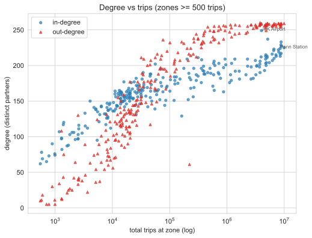
The contrast is sharpest in trips per source, the in-strength of a zone divided by the number of distinct origins feeding it. Midtown Center takes in about 22,900 trips per origin; JFK, despite drawing from nearly every zone in the city (in-degree 249), takes in about 4,510.
| Zone | In-strength | In-degree | Trips / source |
|---|---|---|---|
| Midtown Center | 5,159,038 | 225 | 22,929 |
| Times Sq / Theatre District | 4,348,768 | 233 | 18,664 |
| Penn Station / Madison Sq West | 3,897,451 | 224 | 17,399 |
| East Village | 3,535,216 | 219 | 16,143 |
| LaGuardia Airport | 1,727,487 | 237 | 7,289 |
| JFK Airport | 1,123,029 | 249 | 4,510 |
JFK has a higher in-degree than Midtown Center yet a fifth of its trips per source. The airports are reach hubs; the Midtown cluster are volume hubs. A single weighted-degree number, the kind the 2016 pass reported, collapses that distinction.
Where Manhattan ends
Centrality on a map is not centrality in a network. Fit a doubly-constrained gravity model, which already accounts for each zone's own volume and for distance, and then look at what the model gets wrong per zone. The residual, a mean deviance "surprise", marks zones that are under- or over-connected given where they sit. The model reaches \(\beta = 1.146\) and a Common Part of Commuters of 0.816, so the residual is the interesting part: it is the structure the gravity baseline cannot explain.

The under-connected zones are not the outer boroughs. They are the Upper East and Upper West Sides and the East Village / Alphabet City cluster, all geographically central but residential in their taxi behaviour. The over-connected zones are the Midtown and Times Square commercial core. "Where Manhattan ends", functionally, runs along the edge of that commercial core, not along the river.
| Most under-connected (core) | Surprise | Most over-connected (core) | Surprise |
|---|---|---|---|
| Upper East Side North | −20.28 | Times Sq / Theatre District | +9.40 |
| Upper West Side South | −16.32 | Midtown South | +6.26 |
| Upper East Side South | −16.13 | Clinton East | +5.23 |
| Upper West Side North | −15.68 | Garment District | +4.63 |
| Lincoln Square East | −12.30 | Midtown East | +4.10 |
| East Village | −5.09 | Midtown Center | +3.78 |
A negative surprise means the model expected more taxi flow than the city actually generated. The Upper East Side, perhaps the most "central" address in Manhattan, is the single most under-connected zone in the core. By taxi, it behaves like a periphery.
The day/night reversal
The annual graph is balanced; the daily graph is not. Weighted reciprocity over the year is 0.818, which makes most zones look like quiet two-way streets. Split the day into periods and the structure reappears. Midtown and the Financial District are net sinks in the morning (people arrive) and net sources in the evening (people leave). The East Village and Lower East Side are the exact mirror image.


The net-flow index (out-strength minus in-strength, normalised) flips sign between the morning and evening peaks for the zones that anchor the reversal:
| Zone | NFI, AM peak | NFI, PM peak |
|---|---|---|
| Midtown Center | −0.567 | +0.128 |
| Times Sq / Theatre District | −0.358 | +0.014 |
| Financial District North | −0.205 | +0.241 |
| East Village | +0.492 | −0.168 |
| Lower East Side | +0.372 | −0.209 |
The same swing shows up if you rank zones purely by how many trips arrive at night. Nightlife zones that barely register as daytime destinations dominate after midnight:
| Zone | Daytime destination rank | Night destination rank |
|---|---|---|
| East Village | 42 | 1 |
| Clinton East | 22 | 2 |
| Lower East Side | 51 | 6 |
| Meatpacking / West Village West | 41 | 19 |
| Greenwich Village North | 29 | 29 |
The overlap between the AM and night top-hub sets is small (Jaccard 0.20): the city's busiest zones at 8 AM are largely not its busiest at 2 AM. The original blog read the Lower East Side as "suburb-like" because it looked quiet in aggregate. That was a daytime-only artefact; at night it is one of the busiest destinations in the city.
Temporal rhythms
The year has a season and the week has a shape. Volume peaks in spring: March is the single busiest month at 12.96 million trips, and the spring average runs 11.8% above the June-December average. That drop is partly weather and partly the rise of ride-hailing competition through 2015, so it should not be read as pure seasonality.
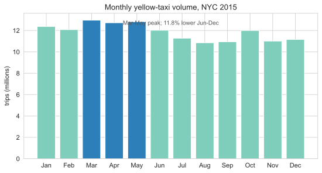
Within the week, two bright bands dominate the hour-by-weekday density: the weekday commute and the weekend late night. Weekday 6-9 AM trips are 12.6% of all volume; weekend 0-4 AM trips are 5.9%. The single busiest cell is Friday around 7 PM, the overlap of the commute home and the start of the weekend.
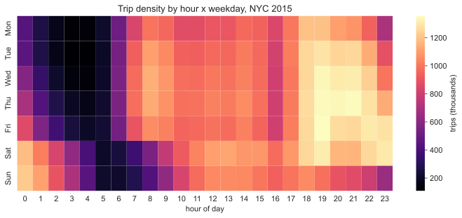
Zones do not all share one rhythm. Clustering each zone's 24-hour weekday pickup curve separates three clean types: commuter-residential zones that peak in the morning, the commercial core that peaks in the evening, and a nightlife group (Lower East Side, the Williamsburgs, Park Slope) whose pickups peak near 11 PM.

The $52 band is a fare rule, not a rounding artefact
A flat line on the fare-versus-duration plot has an explanation. Plot fare against trip duration and a horizontal band appears at about $52, independent of how long the trip took. The original write-up guessed this was rounded tips. It is not. It is the JFK flat fare (RatecodeID 2): a fixed $52 between Manhattan and JFK regardless of time in traffic.
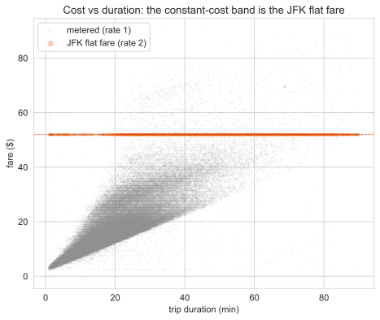
In a 300,000-trip sample, the JFK flat fare is exactly $52 (median $52, interquartile range $52-$52) and accounts for 2.03% of trips. The full $49-53 constant-cost band is 2.19% of trips, and 92.7% of that band is JFK flat-fare travel. The flatness is a tariff, not a measurement quirk.
The network, measured
A flow graph invites the standard battery of network-science tests. Run them and the answers are sometimes a clean finding and sometimes an honest "no". The four diagnostics below ask how the graph fails under attack, whether it is scale-free, how it stacks up against null models, and how efficiently it routes through real geography. Where the data does not support a headline claim, the verdict says so.
Robustness: random failure is survivable, hub removal is not
Remove zones at random and the network barely notices: dropping 10% of zones leaves about 82% of trips and roughly 96% of weighted efficiency intact. Remove the top 10% of zones by strength or by PageRank and only about 13% of trips survive, with weighted efficiency falling to between 17% and 26%. The Molloy-Reed criterion puts \(\kappa = 365.5\), so the random-failure percolation threshold is essentially 1: the giant component holds until almost everything is gone. This is a hub-and-spoke network that shrugs off accidents and falls apart under a targeted strike.
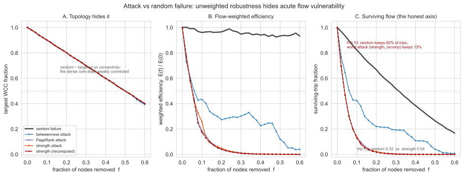
Scale-free testing: heavy-tailed, but not a power law
The zone-strength distribution is strongly heavy-tailed and beats an exponential decisively. That is as far as the evidence goes. A discrete Clauset-Shalizi-Newman fit rejects a clean power law and cannot distinguish the tail from a lognormal, and with only 262 zones the tail is too short to support any scale-free claim. The strength power-law exponent estimates land around \(\alpha \approx 1.23\) to \(1.35\), in the divergent-mean regime below 2, which is another reason to be wary of reading a power law into so few points. The honest verdict is heavy-tailed and hub-dominated, not scale-free.
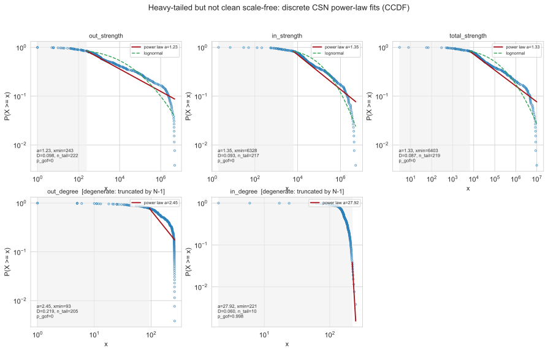
Null models: topology is uninformative, weight is not
The graph is near-complete, with density about 0.66, so the classical topological nulls are degenerate: an Erdos-Renyi graph and a configuration model both reproduce a near-complete graph, and tell us nothing. The informative null is the one that preserves the weight sequence. Against it, weighted reciprocity sits far out in the tail at \(z = +217\): heavy flows are not scattered, they organise into round-trip corridors, Midtown to the airports and Midtown to downtown and back.
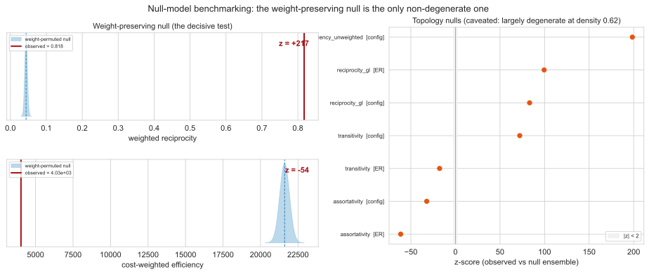
Spatial efficiency and cascades
Taxi routes are close to straight lines. The mean circuity is 1.006 and global efficiency reaches 99.7% of the straight-line ideal, so the network is about as spatially efficient as geometry allows. Betweenness shows little spatial clustering: Moran's I is small, about 0.028. A Motter-Lai overload cascade triggered at JFK collapses the giant component at every tolerance tested, which sounds dramatic but carries a caveat: 149 of 259 nodes carry zero initial load and therefore zero capacity, so the "no safe tolerance" result is partly a zero-capacity artefact rather than a pure fragility finding.

Ten years: a 71% collapse, an invariant geometry
Run the same pipeline on every year from 2015 to 2024. The fleet shrinks dramatically while its shape barely moves. Yellow-taxi monthly volume falls 42.4% from 2015 to 2019 as ride-hailing substitutes for cabs, collapses 70.9% from 2019 to 2020 under COVID, and recovers to only 48.6% of the 2019 level by 2024. The volume story is one of decline; the structural story is one of near-perfect stability.
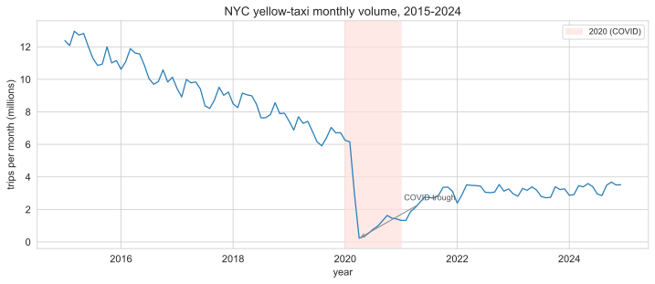
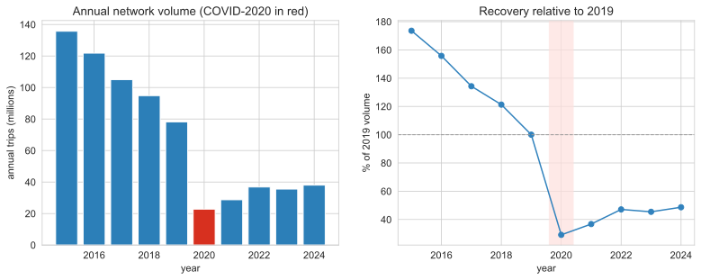
Now hold the structure up against the volume. Annual trips have a coefficient of variation of 0.61 across the decade, a fleet that changes size by more than half. The geometry does not move with it. Global efficiency has a CV of 0.004 around a mean of 0.169; the gravity-model CPC has a CV of 0.007 around a mean of 0.81; the gravity decay \(\beta\) has a CV of 0.064; modularity \(Q\) a CV of 0.074; the maximum k-core a CV of 0.098. Degree assortativity stays negative throughout, between \(-0.123\) and \(-0.184\), so the hub-and-spoke structure never dissolves, and the community count stays at 3 to 4 every year. The spatial geometry of taxi travel is a structural invariant of the city, not of the fleet.
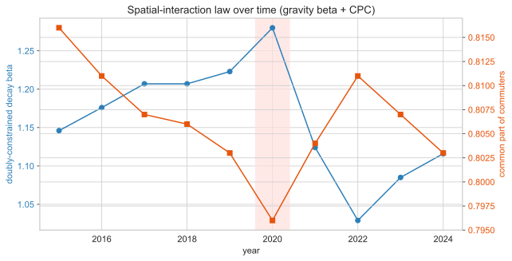
The few things that do change are changes of identity, not of shape. The top arrival hub flips from the commercial core to residential Manhattan: Midtown Center, Murray Hill and Times Square lead in 2015, but the Upper East Side North and South take the top spots from 2020 onward, as work-trip demand fell faster than residential demand.
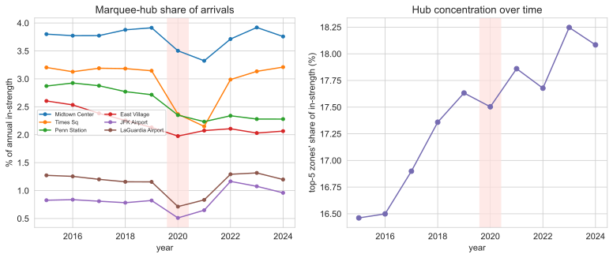
The "where Manhattan ends" finding does not just survive the decade, it sharpens. Tracking the per-year gravity-residual rank of the flagged zones, the East Village drifts further into the under-connected tail over time, from about the 30th percentile of the Manhattan core down to the 13th, so its "reads like a suburb" character strengthens. Times Square stays pinned at the over-connected top and the Upper East Side North at the under-connected bottom.
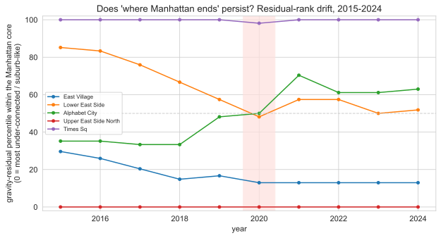
The communities are just as durable. Consecutive-year Leiden partitions align at an average Adjusted Rand Index of 0.883, and the 2019 to 2020 COVID boundary scores 0.943: the shock did not re-draw the city's functional districts. The one genuine reshuffle is 2015 to 2016, at ARI 0.536, which sits before the period of steady decline rather than during the pandemic.
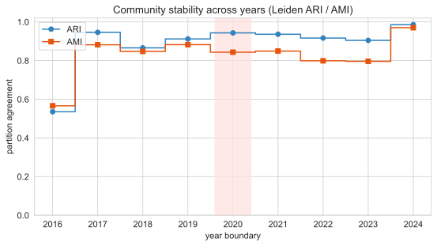
Read together, the panel of metrics over time tells one story: the fleet shrank by more than two-thirds, but distance decay, efficiency, hub dominance and community structure held almost perfectly steady. If you want to see all of these at once, the method page shows the full metric-evolution panel, and the live map still reads the per-zone structure that this decade leaves intact.
Divergences from the original blog
The modernization changed some headline numbers. The 2016-17 project worked at census-tract resolution on a smaller, differently cleaned slice. The 2015 parquet ships taxi-zone IDs rather than coordinates, so the rebuilt graph is zone-based. That changes the node count and several figures, and it also corrects two claims outright.
| Quantity | Original blog | This rebuild | Why it changed |
|---|---|---|---|
| Spatial unit | ~580 tracts | 262 zones | 2015 parquet has zone IDs, not lat/long |
| Frequent edges (>500/yr) | ~1,275 | 7,945 | Zone aggregation packs trips into fewer, heavier pairs; the blog counted a Manhattan tract subset |
| "Constant-cost outliers" | rounded tips | JFK flat fare | $52 RatecodeID 2, 92.7% of the band |
| Lower East Side | "suburb-like" | night #6 destination | Aggregate hid a strong day/night swing |
| Degree treatment | single degree | directed in / out | Splitting degree exposes hub asymmetry |
Two caveats carry through all of this. Yellow taxis over-sample Manhattan and the airports, so the outer boroughs are thin in this data and the gravity residuals are scoped to the high-coverage core. And because the rebuild works on taxi zones rather than tracts, the spatial resolution is coarser than the original. The method page documents both, and the live map lets you read the per-zone numbers directly.